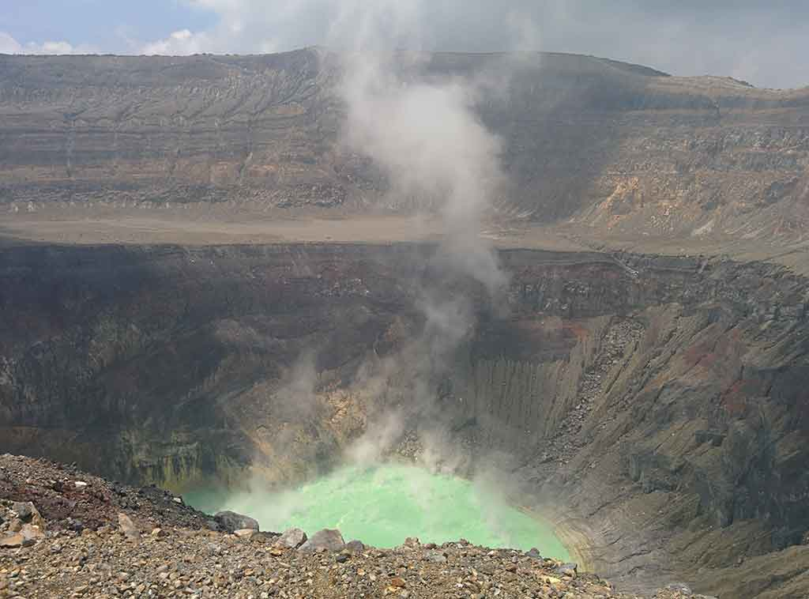
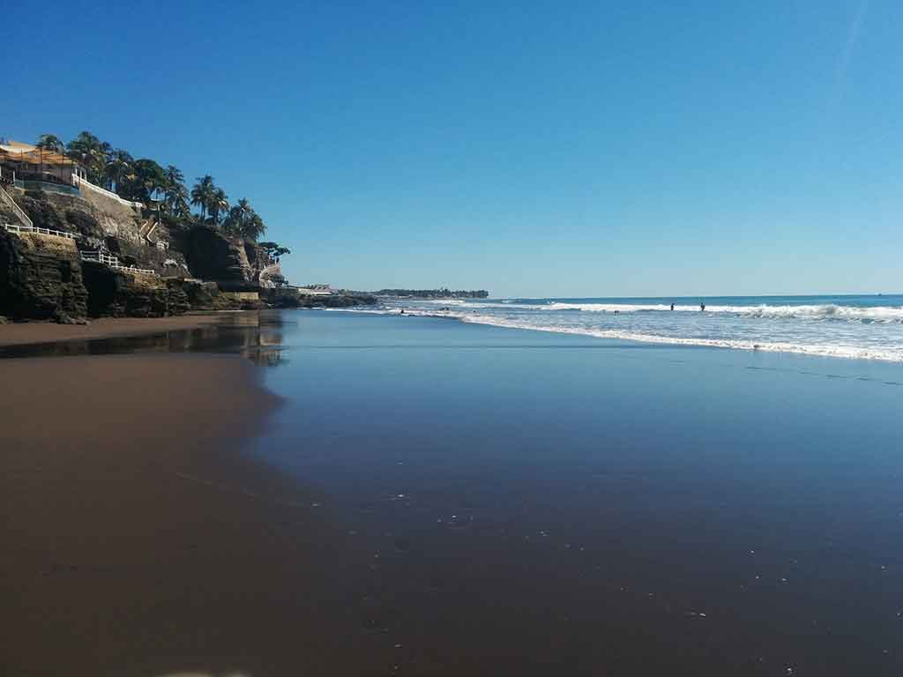
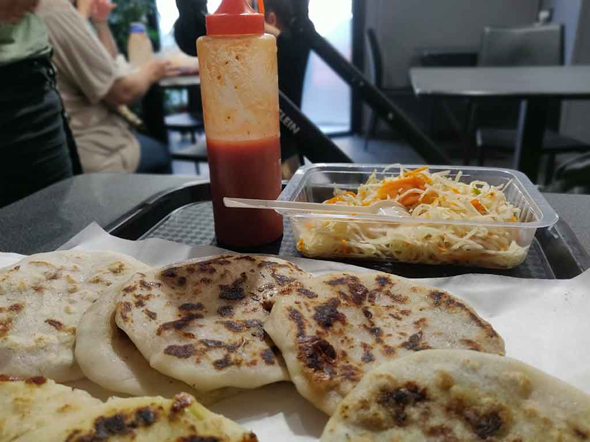

Eine Reise in das Herz Mittelamerikas
El Salvador ist viel mehr als nur Vulkane und Strände. Es ist ein Land, das dich mit seiner Herzlichkeit umgibt, dich mit seiner reichen Geschichte überrascht und dich mit seiner köstlichen Küche erobert. Vom Moment an, in dem du den Boden betrittst, fühlst du dich wie zu Hause. Die Menschen sind freundlich und gastfreundlich, immer bereit zu helfen und ihre Kultur mit dir zu teilen. Wenn du ein authentisches und lebendiges Reiseziel suchst, ist El Salvador der perfekte Ort für dich
Ein Paradies aus Stränden und Vulkanen
El Salvador ist ein kleines Land, aber voller Überraschungen. Bekannt für seine weißen Sandstrände, aktiven Vulkane und eine reiche Kultur, ist El Salvador ein ideales Ziel für Natur- und Abenteuerliebhaber. Eines der Dinge, die mich an El Salvador am meisten beeindruckt haben, ist, wie einfach es ist, von einem Ort zum anderen zu reisen. Das Land ist relativ klein, so dass man überallhin in wenigen Stunden gelangen kann. Dies macht es einfach, verschiedene Regionen zu erkunden und die Vielfalt des Landes zu erleben. El Salvador hat einige der besten Strände Mittelamerikas. Die Strände von El Tunco, El Zonte und La Libertad sind bei Surfern beliebt, während die Strände von Jiquilisco und Barra de Santiago für ihre ruhigen Gewässer und Mangrovenwälder bekannt sind.
Was man in El Salvador machen kann
Es gibt viele Dinge, die man in El Salvador unternehmen kann, darunter:
- Die Strände besuchen
- Vulkane besteigen
- Wandern gehen
- Maya-Ruinen besuchen
- Die lokale Küche probieren
- Etwas über die salvadorianische Kultur lernen
El Salvador ist ein wunderschönes und vielfältiges Land, das für jeden etwas zu bieten hat. Wenn du ein aufregendes und erschwingliches Reiseziel suchst, ist El Salvador eine ausgezeichnete Wahl
Tipps für deine Reise nach El Salvador
- Lerne ein paar spanische Sätze
- Trage leichte und bequeme Kleidung
- Schütze dich vor der Sonne.
- Trinke viel Wasser
- Respektiere die lokalen Bräuche
- Probiert des Typichesessen die Pupusas
El Salvador ist ein sicheres Land für Touristen, aber es ist wichtig, grundlegende Vorsichtsmaßnahmen zu treffen. Ich hoffe, diese Informationen helfen dir bei der Planung deiner Reise nach El Salvador. Wenn du Fragen hast, zögere nicht, einen Kommentar zu hinterlassen.
Genieße deine Reise nach El Salvador!
|  | |
|  | |
 |
|
|  |